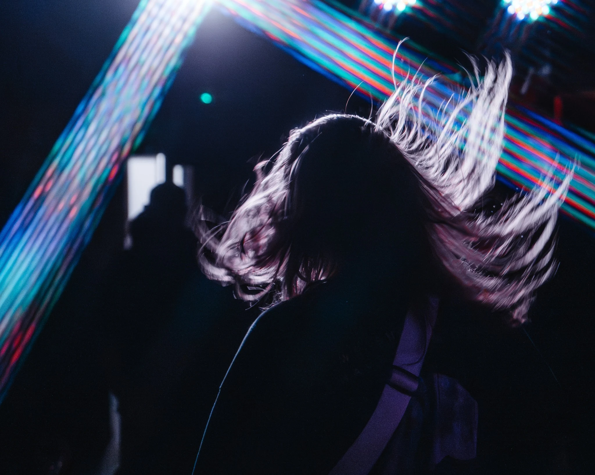
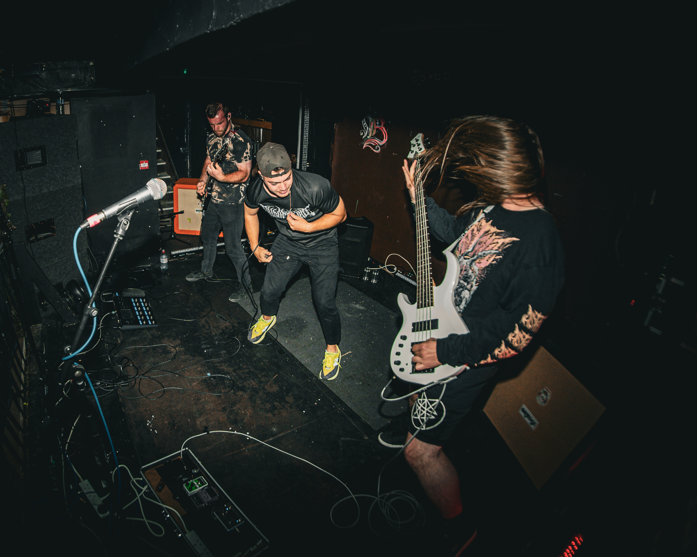
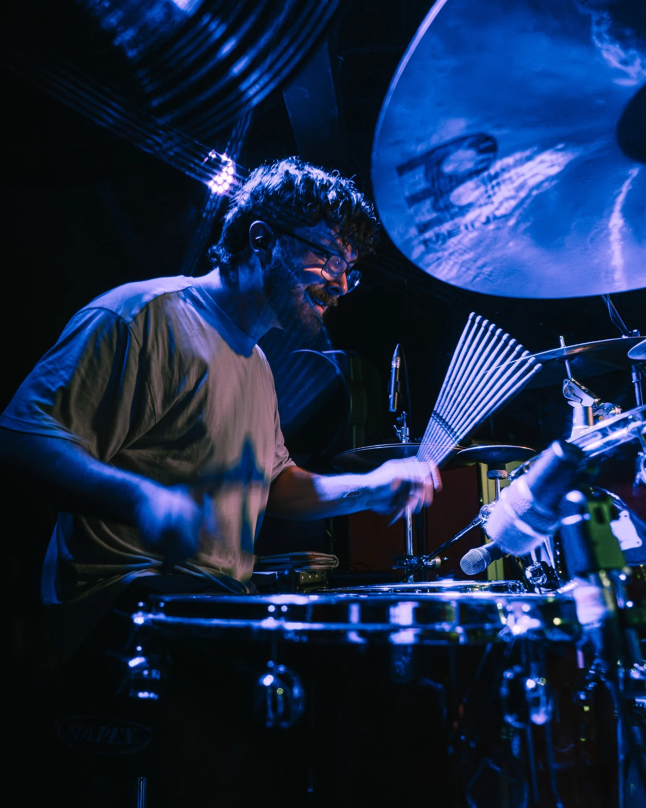

Video source to be connected before this version goes live.
I create concert photography and highlight videos that give artists, promoters and venues strong, ready to use content from each show. The work is designed to help you promote upcoming dates, keep audiences engaged after the event and build a stronger visual identity across social media and your wider marketing.
Short, fast moving edits designed to turn the energy of a live show into content people want to watch and share.
I film performance, crowd reaction, atmosphere and the details around the show, then shape that footage into highlight videos made for social media. You get content that can promote future shows, recap the event, keep your audience engaged and give people a strong reason to share your work after the night is over.

Video source to be connected before this version goes live.

Video source to be connected before this version goes live.

Video source to be connected before this version goes live.
Live photography built around the performer, the crowd and the atmosphere that makes the event feel like itself.
I cover performance moments, wider stage scenes, crowd energy and the details around the event, then deliver a curated set of edited images. Those photographs can support post show recaps, future show promotion, social media, press, websites and an artist or venue's wider visual identity.
This is only a small selection. The full live photography portfolio contains more performance, artist, crowd and atmosphere work.
View photo portfolio →A show can create more than one piece of content.
Depending on the project, coverage can combine photography and video so the same event produces assets for immediate social use as well as longer term promotion.
Arrival, preparation, soundcheck, backstage moments and the parts of the event the audience normally does not see.
Photo and short form video created around the artist for show promotion, releases, social feeds and wider visual identity.
Combined coverage gives you a strong edited image set and a highlight video from the same event, so one shoot produces more content for promotion, social media and future marketing.

Michael Ralph Media is an independent photography and video business based in Guildford, Surrey, focused on live entertainment and artist content. I work with the movement, lighting, atmosphere and unpredictability of live events to create visual material that remains useful after the show is over.
Tell me what you are planning, what you need from the coverage and where the content will be used. I can then work out the right photography, video or combined approach for the project.
Enquire →